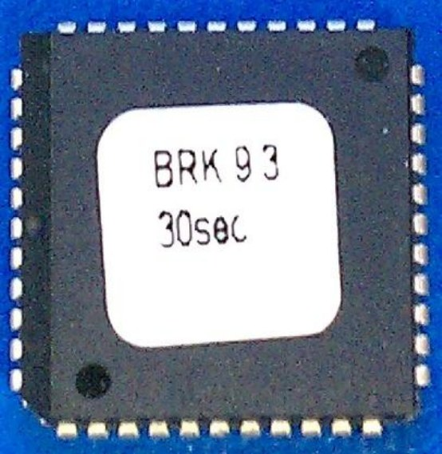

Doc no. MOC-TSB-12-12 // Vol. 12 No. 12 // Apr 26, 2012 // Brake
Controller Board Chip for Pure Brake Fluid Exchanger Machines
New9803598000
MOC has developed a new Controller Board Chip (MOC Part No. 98035) for the Pure Brake™ Machine (MOC Part No. 98000) that is now available for purchase.
What's new
This new chip will change the amount of time the machine flushes the brake fluid from each caliper from 45 seconds to 30 seconds. This chip is beneficial when adding the Auxiliary Brake Tank (MOC Part No. 98033) to your brake machine to use the 32oz brake fluid bottles.
Contact
For more information, contact the Machine & Equipment Department at 866.244.6621.

Part numbers
| Part No. | Description | Notes |
|---|---|---|
| 98035 | Chip, 30 seconds Brake Flush Program | |
| 98000 | Pure Brake™ Machine | |
| 98033 | Auxiliary Brake Tank |